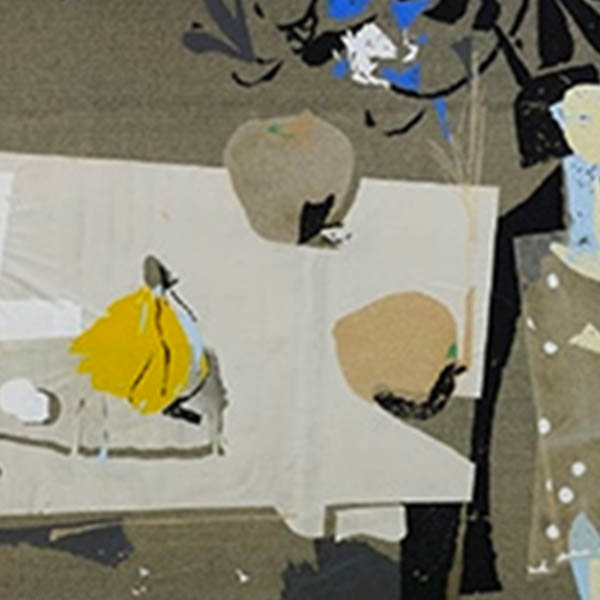
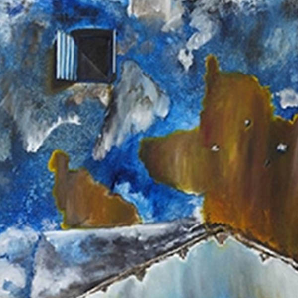
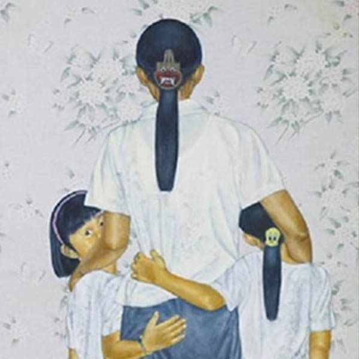
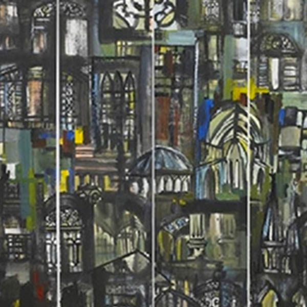

-

1989 UOB Painting Of the Year - Singapore
From The Turtledove
Lim Tiong Ghee -

1991 UOB Painting Of the Year - Singapore
My Haunt
Chua Ek Kay -

1993 UOB Painting Of the Year - Singapore
Echoes of the Window (I)
Raymond Lau Poo Seng -

1998 UOB Painting Of the Year - Singapore
She Loves Me But She’s Not My Mummy
Chng Chin Kang -

2002 UOB Painting Of the Year - Singapore
The Impression Of Singapore Series - Three, Colour Space
Gong Yao Min